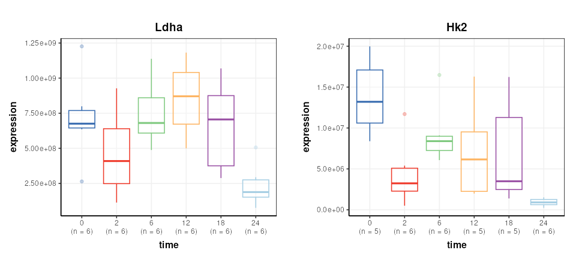
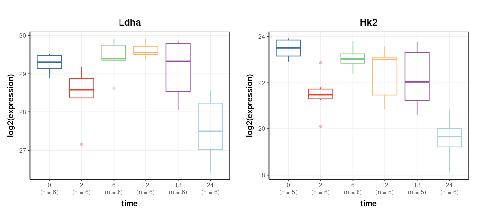
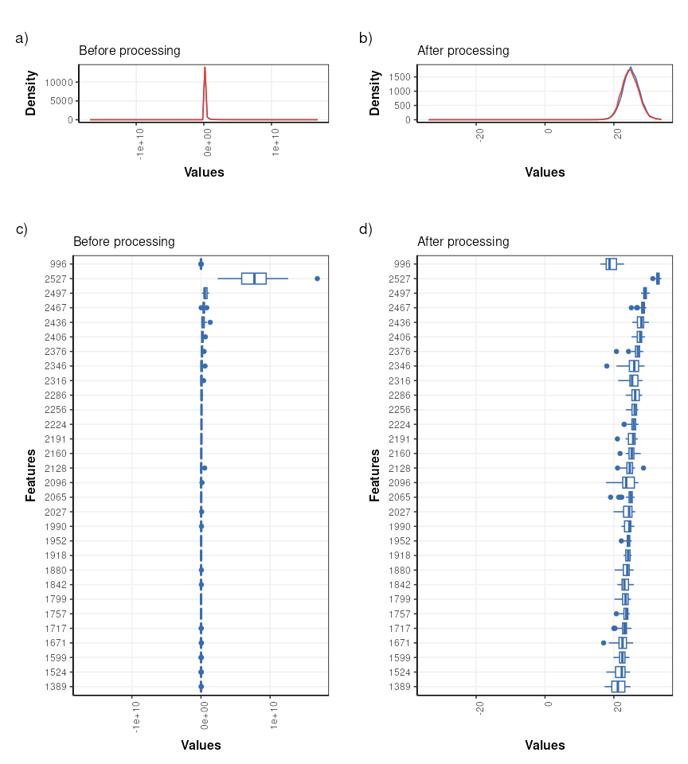
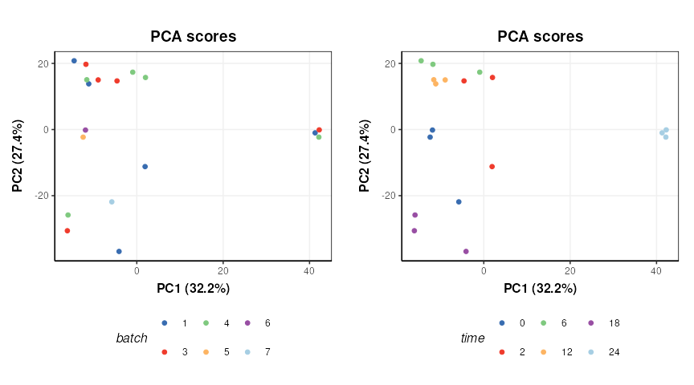
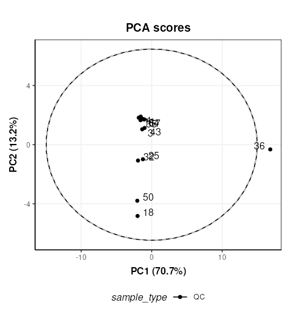
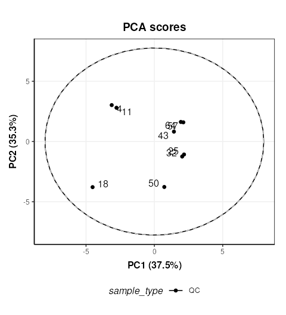
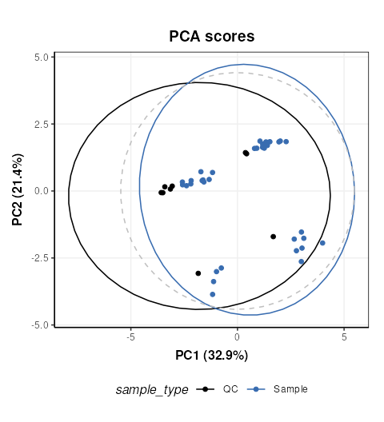
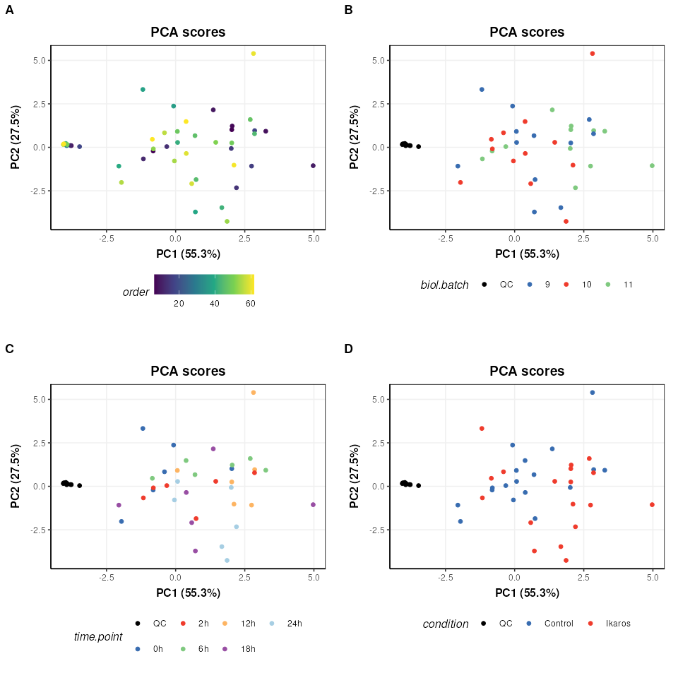
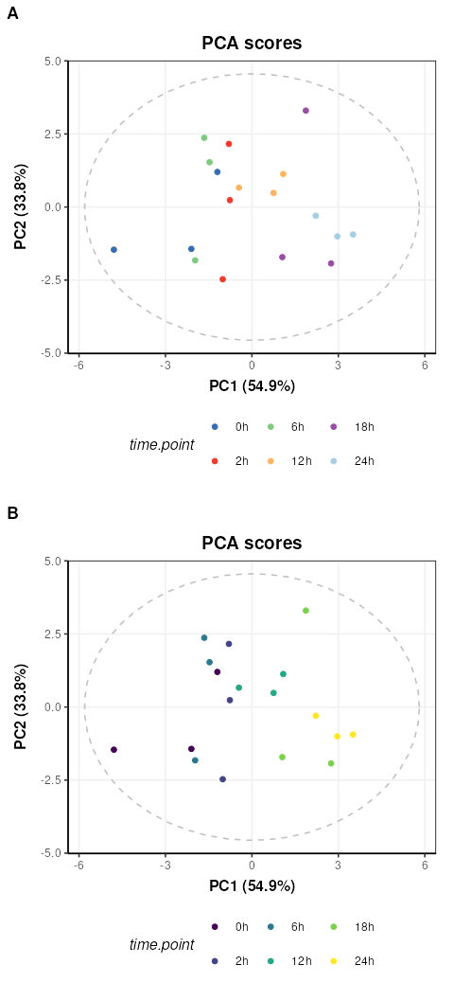

Exploratory data analysis of LC-MS-based proteomics and metabolomics datasets (STATegra project)
Gavin R Lloyd
Phenome Centre Birmingham, University of Birmingham, UKg.r.lloyd@bham.ac.uk
Andris Jankevics
Phenome Centre Birmingham, University of Birmingham, UKa.jankevics@bham.ac.uk
Ralf J Weber
Phenome Centre Birmingham, University of Birmingham, UKr.j.weber@bham.ac.uk
2026-02-21
Source:vignettes/articles/stategra_proteomics_metabolomics.Rmd
stategra_proteomics_metabolomics.RmdExploratory data analysis of LC-MS-based proteomics and metabolomics datasets (STATegra project)
Introduction
The aim of this vignette is to conduct data preprocessing and exploratory analysis of data from the STATegra project (https://www.nature.com/articles/s41597-019-0202-7). For demonstration purposes we will focus on the Proteomics and Metabolomics datasets that are publicly available as part of the STATegra multi-omics dataset.
…the STATegra multi-omics dataset combines measurements from up to 10 different omics technologies applied to the same biological system, namely the well-studied mouse pre-B-cell differentiation. STATegra includes high-throughput measurements of chromatin structure, gene expression, proteomics and metabolomics, and it is complemented with single-cell data. Gomez-Cabrero et al
STATegra includes high-throughput measurements of chromatin structure, gene expression, proteomics and metabolomics, and it is complemented with single-cell data.
LC-MS-based proteomics dataset
The LC-MS-based proteomics dataset from the STATegra multi-omics dataset (see Introduction) can be found on github and must be extracted from the zip file prior to data analysis.
# path to zip
zipfile = "https://raw.github.com/STATegraData/STATegraData/master/Script_STATegra_Proteomics.zip"
## retrieve from BiocFileCache
path = bfcrpath(bfc,zipfile)
temp = bfccache(bfc)
## ... or download to temp location
# path = tempfile()
# temp = tempdir()
# download.file(zipfile,path)
# unzip
unzip(path, files = "Proteomics_01_uniprot_canonical_normalized.txt", exdir=temp)
# read samples
all_data <- read.delim(file.path(temp,"Proteomics_01_uniprot_canonical_normalized.txt"), as.is = TRUE, header = TRUE, sep = "\t")The imported data needs to be converted to
DatasetExperiment format for use with
structToolbox.
# extract data matrix
data = all_data[1:2527,51:86]
# shorten sample names
colnames(data) = lapply(colnames(data), function (x) substr(x, 27, nchar(x)))
# replace 0 with NA
data[data == 0] <- NA
# transpose
data=as.data.frame(t(data))
# prepare sample meta
SM = lapply(rownames(data),function(x) {
s=strsplit(x,'_')[[1]] # split at underscore
out=data.frame(
'treatment' = s[[1]],
'time' = substr(s[[2]],1,nchar(s[[2]])-1) ,
'batch' = substr(s[[3]],6,nchar(s[[3]])),
'condition' = substr(x,1,6) # interaction between treatment and time
)
return(out)
})
SM = do.call(rbind,SM)
rownames(SM)=rownames(data)
# convert to factors
SM$treatment=factor(SM$treatment)
SM$time=ordered(SM$time,c("0","2","6","12","18","24"))
SM$batch=ordered(SM$batch,c(1,3,4,5,6,7))
SM$condition=factor(SM$condition)
# variable meta data
VM = all_data[1:2527,c(1,6,7)]
rownames(VM)=colnames(data)
# prepare DatasetExperiment
DS = DatasetExperiment(
data = data,
sample_meta = SM,
variable_meta = VM,
name = 'STATegra Proteomics',
description = 'downloaded from: https://github.com/STATegraData/STATegraData/'
)
DS## A "DatasetExperiment" object
## ----------------------------
## name: STATegra Proteomics
## description: downloaded from: https://github.com/STATegraData/STATegraData/
## data: 36 rows x 2527 columns
## sample_meta: 36 rows x 4 columns
## variable_meta: 2527 rows x 3 columnsA number of Reporter genes were included in the study. We plot two of them here to illustrate some trends in the data.
# find id of reporters
Ldha = which(DS$variable_meta$Gene.names=='Ldha')
Hk2 = which(DS$variable_meta$Gene.names=='Hk2')
# chart object
C = feature_boxplot(feature_to_plot=Ldha,factor_name='time',label_outliers=FALSE)
g1=chart_plot(C,DS)+ggtitle('Ldha')+ylab('expression')
C = feature_boxplot(feature_to_plot=Hk2,factor_name='time',label_outliers=FALSE)
g2=chart_plot(C,DS)+ggtitle('Hk2')+ylab('expression')
plot_grid(g1,g2,nrow=1,align='vh',axis='tblr')
Data transformation
The data is log2 transformed, then scaled such that the mean of the
medians is equal for all conditions. These steps are available in
structToolbox using log_transform and
mean_of_medians objects.
# prepare model sequence
M = log_transform(
base=2) +
mean_of_medians(
factor_name = 'condition')
# apply model sequence
M = model_apply(M,DS)
# get transformed data
DST = predicted(M)The Reporter genes are plotted again for comparison.
# chart object
C = feature_boxplot(feature_to_plot=Ldha,factor_name='time',label_outliers=FALSE)
g1=chart_plot(C,DST)+ggtitle('Ldha')+ylab('log2(expression)')
C = feature_boxplot(feature_to_plot=Hk2,factor_name='time',label_outliers=FALSE)
g2=chart_plot(C,DST)+ggtitle('Hk2')+ylab('log2(expression)')
plot_grid(g1,g2,nrow=1,align='vh',axis='tblr')
Missing value filtering
Missing value filtering involves removing any feature (gene) where there are at least 3 missing values per group in at least 11 samples.
This specific filter is not in structToolbox at this
time, but can be achieved by combining filter_na_count and
filter_by_name objects.
Specifically, the default output of filter_na_count is
changed to return a matrix of NA counts per class. This output is then
connected to the ‘names’ input of filter_by_names and
converted to TRUE/FALSE using the ‘seq_fcn’ input.
The ‘seq_fcn’ function processes the NA counts before they
are used as inputs for filter_by_names. When data is passed
along the model sequence it passes unchanged through the
filter_na_count object becuase the default output has been
changed, so the filter_na_count and
filter_by_name objects are working together as a single
filter.
# build model sequence
M2 = filter_na_count(
threshold=2,
factor_name='condition',
predicted='na_count') + # override the default output
filter_by_name(
mode='exclude',
dimension='variable',
names='place_holder',
seq_in='names',
seq_fcn=function(x) { # convert NA count pre group to true/false
x=x>2 # more the two missing per group
x=rowSums(x)>10 # in more than 10 groups
return(x)
}
)
# apply to transformed data
M2 = model_apply(M2,DST)
# get the filtered data
DSTF = predicted(M2)Missing value imputation
STATegra uses two imputation methods that are not available as
struct objects, so we create temporary
STATegra_impute objects to do this using some functions
from the struct package.
The first imputation method imputes missing values for any treatment
where values are missing for all samples using a “random value below
discovery”. We create a new struct object using
set_struct_obj in the global environment, and a
“method_apply” method that implements the imputation.
# create new imputation object
set_struct_obj(
class_name = 'STATegra_impute1',
struct_obj = 'model',
params=c(factor_sd='character',factor_name='character'),
outputs=c(imputed='DatasetExperiment'),
prototype = list(
name = 'STATegra imputation 1',
description = 'If missing values are present for all one group then they are replaced with min/2 + "random value below discovery".',
predicted = 'imputed'
)
)
# create method_apply for imputation method 1
set_obj_method(
class_name='STATegra_impute1',
method_name='model_apply',
definition=function(M,D) {
# for each feature count NA within each level
na = apply(D$data,2,function(x){
tapply(x,D$sample_meta[[M$factor_name]],function(y){
sum(is.na(y))
})
})
# count number of samples in each group
count=summary(D$sample_meta[[M$factor_name]])
# standard deviation of features within levels of factor_sd
sd = apply(D$data,2,function(x) {tapply(x,D$sample_meta[[M$factor_sd]],sd,na.rm=TRUE)})
sd = median(sd,na.rm=TRUE)
# impute or not
check=na == matrix(count,nrow=2,ncol=ncol(D)) # all missing in one class
# impute matrix
mi = D$data
for (j in 1:nrow(mi)) {
# index of group for this sample
g = which(levels(D$sample_meta[[M$factor_name]])==D$sample_meta[[M$factor_name]][j])
iv=rnorm(ncol(D),min(D$data[j,],na.rm=TRUE)/2,sd)
mi[j,is.na(mi[j,]) & check[g,]] = iv[is.na(mi[j,]) & check[g,]]
}
D$data = mi
M$imputed=D
return(M)
}
)The second imputation method replacing missing values in any condition with exactly 1 missing value with the mean of the values for that condition. Again we create a new struct object and corresponding method for the the new object to implement the filter.
# create new imputation object
set_struct_obj(
class_name = 'STATegra_impute2',
struct_obj = 'model',
params=c(factor_name='character'),
outputs=c(imputed='DatasetExperiment'),
prototype = list(
name = 'STATegra imputation 2',
description = 'For those conditions with only 1 NA impute with the mean of the condition.',
predicted = 'imputed'
)
)
# create method_apply for imputation method 2
set_obj_method(
class_name='STATegra_impute2',
method_name='model_apply',
definition=function(M,D) {
# levels in condition
L = levels(D$sample_meta[[M$factor_name]])
# for each feature count NA within each level
na = apply(D$data,2,function(x){
tapply(x,D$sample_meta[[M$factor_name]],function(y){
sum(is.na(y))
})
})
# standard deviation of features within levels of factor_sd
sd = apply(D$data,2,function(x) {tapply(x,D$sample_meta[[M$factor_name]],sd,na.rm=TRUE)})
sd = median(sd,na.rm=TRUE)
# impute or not
check=na == 1 # only one missing for a condition
# index of samples for each condition
IDX = list()
for (k in L) {
IDX[[k]]=which(D$sample_meta[[M$factor_name]]==k)
}
## impute
# for each feature
for (k in 1:ncol(D)) {
# for each condition
for (j in 1:length(L)) {
# if passes test
if (check[j,k]) {
# mean of samples in group
m = mean(D$data[IDX[[j]],k],na.rm=TRUE)
# imputed value
im = rnorm(1,m,sd)
# replace NA with imputed
D$data[is.na(D$data[,k]) & D$sample_meta[[M$factor_name]]==L[j],k]=im
}
}
}
M$imputed=D
return(M)
}
)The new STATegra imputation objects can now be used in model
sequences like any other struct object. A final filter is
added to remove any feature that has missing values after
imputation.
# model sequence
M3 = STATegra_impute1(factor_name='treatment',factor_sd='condition') +
STATegra_impute2(factor_name = 'condition') +
filter_na_count(threshold = 3, factor_name='condition')
# apply model
M3 = model_apply(M3,DSTF)
# get imputed data
DSTFI = predicted(M3)
DSTFI## A "DatasetExperiment" object
## ----------------------------
## name: STATegra Proteomics
## description: downloaded from: https://github.com/STATegraData/STATegraData/
## data: 36 rows x 864 columns
## sample_meta: 36 rows x 4 columns
## variable_meta: 864 rows x 3 columnsExploratory analysis
It is often useful to visualise the distribution of values across samples to verify that the transformations/normalisation/filtering etc have been effective.

The values are no longer skewed and show an approximately normal distribution. The boxplots are comparable in width with very few outliers indicated, so the transformations etc have had an overall positive effect.
PCA is used to provide a graphical representation of the data. For comparison with the outputs from STATegra a filter is included to reduce the data to include only the treated samples (IKA)
# model sequence
P = filter_smeta(mode='include',factor_name='treatment',levels='IKA') +
mean_centre() +
PCA(number_components = 2)
# apply model
P = model_apply(P,DSTFI)
# scores plots coloured by factors
g = list()
for (k in c('batch','time')) {
C = pca_scores_plot(factor_name=k,ellipse='none')
g[[k]]=chart_plot(C,P[3])
}
plot_grid(plotlist = g,nrow=1)
There does not appear to be a strong batch effect. PC1 is dominated by time point “24” and some potentially outlying points from time points “2” and “0”.
LC-MS-based metabolomics dataset
The LC-MS-based metabolomics dataset from the STATegra multi-omics dataset (see Introduction) can be found on github and must be extracted from zip file prior to data analysis.
# path to zip
zipfile = "https://raw.github.com/STATegraData/STATegraData/master/Script_STATegra_Metabolomics.zip"
## retrieve from BiocFileCache
path = bfcrpath(bfc,zipfile)
temp = bfccache(bfc)
## ... or download to temp location
# path = tempfile()
# temp = tempdir()
# download.file(zipfile,path)
# unzip
unzip(zipfile=path, files = "LC_MS_raw_data.xlsx", exdir=temp)
# read samples
data <- as.data.frame(read.xlsx(file.path(temp,"LC_MS_raw_data.xlsx"),sheet = 'Data'))The imported data needs to be converted to
DatasetExperiment format for use with
structToolbox.
# extract sample meta data
SM = data[ ,1:8]
# add coloumn for sample type (QC, blank etc)
blanks=c(1,2,33,34,65,66)
QCs=c(3,4,11,18,25,32,35,36,43,50,57,64)
SM$sample_type='Sample'
SM$sample_type[blanks]='Blank'
SM$sample_type[QCs]='QC'
# put qc/blank labels in all factors for plotting later
SM$biol.batch[SM$sample_type!='Sample']=SM$sample_type[SM$sample_type!='Sample']
SM$time.point[SM$sample_type!='Sample']=SM$sample_type[SM$sample_type!='Sample']
SM$condition[SM$sample_type!='Sample']=SM$sample_type[SM$sample_type!='Sample']
# convert to factors
SM$biol.batch=ordered(SM$biol.batch,c('9','10','11','12','QC','Blank'))
SM$time.point=ordered(SM$time.point,c('0h','2h','6h','12h','18h','24h','QC','Blank'))
SM$condition=factor(SM$condition)
SM$sample_type=factor(SM$sample_type)
# variable meta data
VM = data.frame('annotation'=colnames(data)[9:ncol(data)])
# raw data
X = data[,9:ncol(data)]
# convert 0 to NA
X[X==0]=NA
# force to numeric; any non-numerics will become NA
X=data.frame(lapply(X,as.numeric),check.names = FALSE)
# make sure row/col names match
rownames(X)=data$label
rownames(SM)=data$label
rownames(VM)=colnames(X)
# create DatasetExperiment object
DE = DatasetExperiment(
data = X,
sample_meta = SM,
variable_meta = VM,
name = 'STATegra Metabolomics LCMS',
description = 'https://www.nature.com/articles/s41597-019-0202-7'
)
DE## A "DatasetExperiment" object
## ----------------------------
## name: STATegra Metabolomics LCMS
## description: https://www.nature.com/articles/s41597-019-0202-7
## data: 66 rows x 152 columns
## sample_meta: 66 rows x 9 columns
## variable_meta: 152 rows x 1 columnsData preprocessing
In the STATegra project the LCMS data was combined with GCMS data and multiblock analysis was conducted. Here only the LCMS will be explored, so the data will be processed differently in comparison to Gomez-Cabrero et al. Some basic processing steps will be applied in order to generate a valid PCA plot from the biological and QC samples.
# prepare model sequence
MS = filter_smeta(mode = 'include', levels='QC', factor_name = 'sample_type') +
knn_impute(neighbours=5) +
vec_norm() +
log_transform(base = 10)
# apply model sequence
MS = model_apply(MS, DE)## Warning in knnimp(x, k, maxmiss = rowmax, maxp = maxp): 3 rows with more than 50 % entries missing;
## mean imputation used for these rowsExploratory analysis
First we will use PCA to look at the QC samples in order to make an assessment of the data quality.
# pca model sequence
M = mean_centre() +
PCA(number_components = 3)
# apply model
M = model_apply(M,predicted(MS))
# PCA scores plot
C = pca_scores_plot(factor_name = 'sample_type',label_factor = 'order',points_to_label = 'all')
# plot
chart_plot(C,M[2])
The QC labelled “36” is clearly very different to the other QCs. In STATegra this QC was removed, so we will exclude it here as well. This corresponds to QC H1. STATegra also excluded QC samples measured immediately after a blank, which we will also do here.
# prepare model sequence
MS = filter_smeta(
mode = 'include',
levels='QC',
factor_name = 'sample_type') +
filter_by_name(
mode = 'exclude',
dimension='sample',
names = c('1358BZU_0001QC_H1','1358BZU_0001QC_A1','1358BZU_0001QC_G1')) +
knn_impute(
neighbours=5) +
vec_norm() +
log_transform(
base = 10) +
mean_centre() +
PCA(
number_components = 3)
# apply model sequence
MS = model_apply(MS, DE)## Warning in knnimp(x, k, maxmiss = rowmax, maxp = maxp): 4 rows with more than 50 % entries missing;
## mean imputation used for these rows
# PCA scores plot
C = pca_scores_plot(factor_name = 'sample_type',label_factor = 'order',points_to_label = 'all')
# plot
chart_plot(C,MS[7])
Now we will plot the QC samples in context with the samples. There are several possible approaches, and we will apply the approach of applying PCA to the full dataset including the QCs. We will exclude the blanks as it is likely that they will dominate the plot if not removed. All samples from batch 12 were excluded from STATegra and we will replicate that here.
# prepare model sequence
MS = filter_smeta(
mode = 'exclude',
levels='Blank',
factor_name = 'sample_type') +
filter_smeta(
mode = 'exclude',
levels='12',
factor_name = 'biol.batch') +
filter_by_name(
mode = 'exclude',
dimension='sample',
names = c('1358BZU_0001QC_H1',
'1358BZU_0001QC_A1',
'1358BZU_0001QC_G1')) +
knn_impute(
neighbours=5) +
vec_norm() +
log_transform(
base = 10) +
mean_centre() +
PCA(
number_components = 3)
# apply model sequence
MS = model_apply(MS, DE)## Warning in knnimp(x, k, maxmiss = rowmax, maxp = maxp): 2 rows with more than 50 % entries missing;
## mean imputation used for these rows
# PCA scores plots
C = pca_scores_plot(factor_name = 'sample_type')
# plot
chart_plot(C,MS[8])
The QCs appear to representative of the samples, but there are strong clusters in the data, including the QC samples which have no biological variation. There is likely to be a number of ‘low quality’ features that should be excluded, so we will do that now, and use more sophisticated normalisation (PQN) and scaling methods (glog).
MS = filter_smeta(
mode = 'exclude',
levels = '12',
factor_name = 'biol.batch') +
filter_by_name(
mode = 'exclude',
dimension='sample',
names = c('1358BZU_0001QC_H1',
'1358BZU_0001QC_A1',
'1358BZU_0001QC_G1')) +
blank_filter(
fold_change = 20,
qc_label = 'QC',
factor_name = 'sample_type') +
filter_smeta(
mode='exclude',
levels='Blank',
factor_name='sample_type') +
mv_feature_filter(
threshold = 80,
qc_label = 'QC',
factor_name = 'sample_type',
method = 'QC') +
mv_feature_filter(
threshold = 50,
factor_name = 'sample_type',
method='across') +
rsd_filter(
rsd_threshold=20,
qc_label='QC',
factor_name='sample_type') +
mv_sample_filter(
mv_threshold = 50) +
pqn_norm(
qc_label='QC',
factor_name='sample_type') +
knn_impute(
neighbours=5,
by='samples') +
glog_transform(
qc_label = 'QC',
factor_name = 'sample_type') +
mean_centre() +
PCA(
number_components = 10)
# apply model sequence
MS = model_apply(MS, DE)
# PCA plots using different factors
g=list()
for (k in c('order','biol.batch','time.point','condition')) {
C = pca_scores_plot(factor_name = k,ellipse='none')
# plot
g[[k]]=chart_plot(C,MS[length(MS)])
}
plot_grid(plotlist = g,align='vh',axis='tblr',nrow=2,labels=c('A','B','C','D'))
We can see now that the QCs are tightly clustered. This indicates that the biological variance of the remaining high quality features is much greater than the technical variance represented by the QCs.
There does not appear to be a trend by measurement order (A), which is an important indicator that instrument drift throughout the run is not a large source of variation in this dataset.
There does not appear to be strong clustering related to biological batch (B).
There does not appear to be a strong trend with time (C) but this is likely to be a more subtle variation and might be masked by other sources of variance at this stage.
There is some clustering related to condition (D) but with overlap.
To further explore any trends with time, we will split the data by the condition factor and only explore the Ikaros group. Removing the condition factor variation will potentially make it easier to spot any more subtle trends. We will extract the glog transformed matrix from the previous model sequence and continue from there.
# get the glog scaled data
GL = predicted(MS[11])
# extract the Ikaros group and apply PCA
IK = filter_smeta(
mode='include',
factor_name='condition',
levels='Ikaros') +
mean_centre() +
PCA(number_components = 5)
# apply the model sequence to glog transformed data
IK = model_apply(IK,GL)
# plot the PCA scores
C = pca_scores_plot(factor_name='time.point',ellipse = 'sample')
g1=chart_plot(C,IK[3])
g2=g1 + scale_color_viridis_d() # add continuous scale colouring
plot_grid(g1,g2,nrow=2,align='vh',axis = 'tblr',labels=c('A','B'))
Colouring by groups (A) makes the time point trend difficult to see,
but by adding a ggplot continuous colour scale “viridis”
(B) the trend with time along PC1 becomes much clearer.